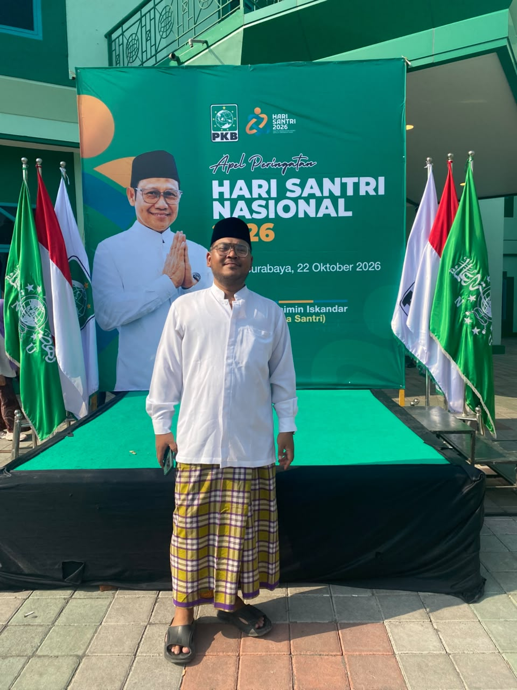

Peringatan Hari Santri Nasional kembali menjadi momentum krusial untuk menegaskan peran strategis santri dalam merespons dinamika zaman. Menyadari hal tersebut, Ketua Dewan Pengurus Anak Cabang (DPAC) Partai Kebangkitan Bangsa (PKB) Kecamatan Rungkut, Nasfa Uuth Akhmadie, menyerukan agar kaum santri bersiap mengambil posisi sebagai garda terdepan dalam perubahan sosial.
Pesan kebangkitan dan kemandirian kaum santri tersebut disampaikan langsung dalam acara peringatan Hari Santri Nasional yang diselenggarakan pada Kamis, 22 Oktober 2026. Kegiatan yang menjadi ajang refleksi ini berlangsung di wilayah Kecamatan Rungkut, Kota Surabaya.
Dorongan ini disuarakan karena santri tercatat dalam sejarah memiliki saham besar atas tegaknya kemerdekaan Indonesia, sehingga di era modern ini mereka dituntut untuk membuang jauh-jauh mentalitas "inlander" atau rasa inferior di tengah masyarakat. Untuk mewujudkannya, santri harus terjun ke akar rumput sebagai penggerak utama melalui perwujudan konsep "Santri Par Excellence" gagasan KH. Abdurrahman Wahid (Gus Dur), yakni menjadi figur paripurna yang berdaya guna bagi lingkungannya.

"Santri tidak boleh sekadar menjadi penonton. Kita memiliki saham atas kemerdekaan bangsa ini dan harus terus terlibat dalam perjalanan zaman," tegas Nasfa. Ia menambahkan bahwa sosok santri teladan adalah mereka yang mampu mengawinkan kecerdasan intelektual, kedalaman ilmu agama, dan keluhuran akhlak untuk memberikan kontribusi nyata bagi masyarakat luas.
Seiring perkembangan zaman, peran kaum santri kini memang terus berekspansi melampaui batas pendidikan keagamaan di balik dinding pesantren. Keterlibatan mereka semakin meluas pada upaya pemberdayaan sosial dan peningkatan kapasitas warga, sebuah misi yang juga terus diupayakan oleh Nasfa—tokoh muda yang akrab disapa Mas Uuth—demi mewujudkan tatanan masyarakat yang lebih berkeadilan dan mandiri.